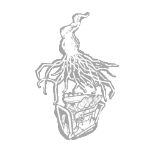

连锁爆发 Eruption
所属：复仇女神（杀手）
| 等级 | 档位 1 | 档位 2 | 档位 3 |
|---|---|---|---|
| 数值 | 8 1 | 10 | 12 |
描述
NE-α 寄生体赋予你布置陷阱所需的智慧与感知。对带有【黄色光环】的发电机使用「对发电机造成伤害」动作时：当逃生者进入濒死状态，喷发会对所有被高亮标记的发电机触发以下效果：使其爆炸并受到伤害；立即使其回退相当于总进度 -10% 的数值；随后使其开始持续回退。使所有正在维修这些发电机的逃生者受到以下影响：使其尖叫；向你公开其光环 8/10/12 秒。喷发在触发效果后进入 30 秒冷却，同时重置被高亮标记的光环。 「它会使用武器吗？」——吉尔·瓦伦丁